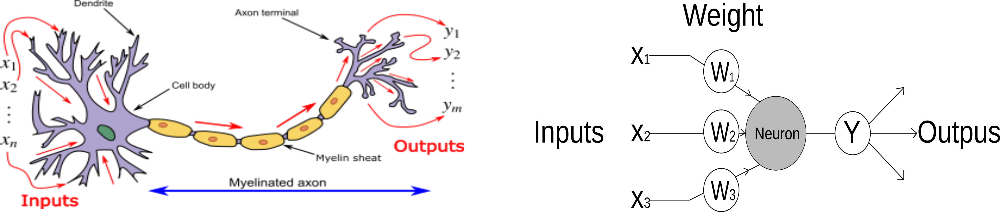
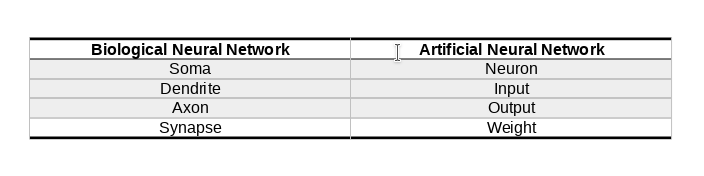
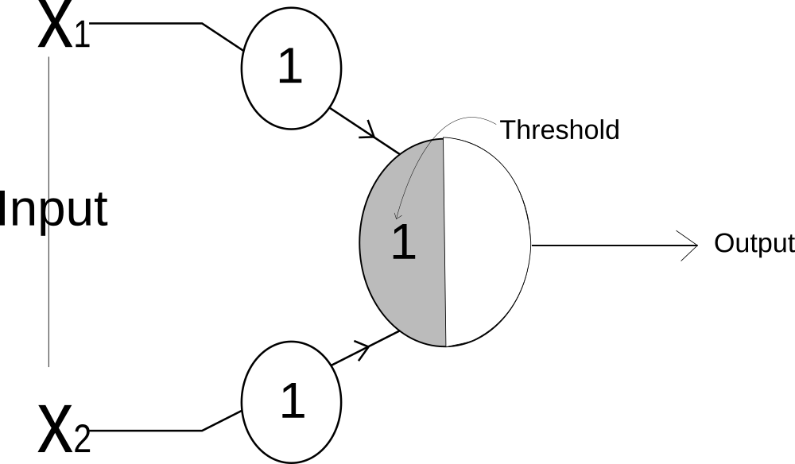
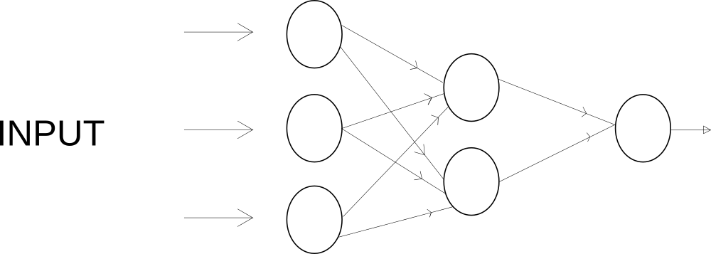

Mimicking Biological Neural Network | Artificial Neurons and Biological Neurons | Perceptron | Multi-Layer Perceptron | Backpropagation

Although a present day artificial neural network resembles the biological neural network much as a paper plane resembles a supersonic jet [ Glassner (2018) ] and even ANN have become quite different from the biological neural network, studying the biological neural network will do only good.
Biological Neural Network
Neural network is the connection of a neurons(information processing unit). So if we want to model a biological neural network we should start with modelling a single biological neuron. A biological neuron consist of a cell body called soma, a number of fibres called dendrites, and a single long fibre called axon.

Information in the form of electrical signals come to the neuron from the dendrites. These electrical signals are combined in the soma and when the total exceeds certain threshold, a new electrical signal is sent to anothe part of the neuron.
Artificial Neural Network
Like, biological neural network, ANN consist of a number of very simple computing element, also called neurons. Each neuron recieves a number of input signal and it sends out a single output signal. The output may be a final output or it may act as input for other neurons.
MCP Neuron
In 1943, Warren McCulloch and Walter Pitts proposed a very simple model of the biological neuron. A single neuron takes multiple binary(on/off) input and give one binary output. The neuron is activated when certain number of inputs are ON or activated i.e when the sum of the inputs exceed certain threshold. The inputs of MCP Neuron is binary i.e 1 or 0 and it is weighted with identical values.
The big contribution of this work was that they have shown that even with such a simple model it is possible to build a network of artificial neurons that can computes any logical proposition we want. i.e we can perform mathematical logic with neurons hence we can do mathematics with neuron.
Let's use a MCP Neuron to perform some mathematical logic:
AND Gate
AND Gate is the logic gate that implements conjuction. Whenever both inputs are active then only the output will be activated.
\begin{bmatrix} {x_1} & {x_2} & {y} \\ {0} & {0} & {0} \\ {0} & {1} & {0} \\ {1} & {0} & {0} \\ {1} & {1} & {1} \\ \end{bmatrix}fig: AND Gate
For AND Gate, we can use MCP neuron as shown in the image. The input x_1 and x_2 both have the weight of 1.
So the input value is y_input = 1*x_1 + 1*x_2
and the threshold of the neuron is 2.
OR GATE
In OR Gate, output is activated if any one of the input is active.
\begin{bmatrix} {x_1} & {x_2} & {y} \\ {0} & {0} & {0} \\ {0} & {1} & {1} \\ {1} & {0} & {1} \\ {1} & {1} & {1} \\ \end{bmatrix}fig: OR Gate
For OR Gate, both input will have weight of 1 and the threshold of the neuron will be 1.
NOT Gate
In NOT Gate, the output is activated if the input is turned off, and the output will be turned off if the input is activated.
\begin{bmatrix} {x_1} & {y} \\ {0} & {1} \\ {1} & {0} \end{bmatrix}For OR Gate, the threshold value will be 0. When the input is turned off i.e 0, then the input mathces the threshold, so it will be activated. But when the input is turned on i.e 1, then the input won't matches with the threshold, so the output will be deactivated.
Perceptron
Building on the insight of the MCP neuron, Rosenblatt proposed Perceptron in 1957. Perceptron works very similar respect to perceptron but with some imporvements:
- The inputs became number instead of just binary.
- The weight of the inputs became variable instead of identical weights for all inputs.
- bias trick
The working of perceptron is very similar to MCP neuron. Perceptron takes inputs, scaled it by some weight and add all the weighted inputs. The result is then compared against a threshold and if the result exceed the threshold the output is 1 else -1( in some variation the output is set to 1 and 0 respectively).
What are the inputs?
Inputs are the number which we record in the real world. Input are used to describe something. For example: we can describe an animal roughly using its weight, height, fur thickness etc. So,
\[animal = [weight(in KG), height(Meter), fur(Centimeter)]\] \[elephant_1 = [2000, 10, 3] \] \[dog_1 = [20, 1, 1] \] \[human_1 = [100, 2, 1]\]We can represent any animal using given inputs.
What are the weights?
Weights are the number which we use to scale the inputs. Three inputs in above case have different significance, the input with greater significance will be scaled with higher number(i.e the input will have higher weight) and the input which are less significant will be scaled with lesser number.
Using perceptron to find elephant.
Let the weights of the input be:
\begin{bmatrix} {inputs} & {weights} \\ {weight} & {2} \\ {height} & {1}\\ {fur} & {0.5} \end{bmatrix}Let the threshold be 1000, i.e if the weighted sum is greater than 1000, the animal is elephant else no.
animal_1 = [1000, 5, 2]
animal_2 = [200, 3, 1]
animal_3 = [30, 2, 2]
For the first animal,
weighted_sum = 1000*2 + 5*1 + 2*0.5 = 2006, which is greater than 1000, hence it is elephant.
For the second animal,
weighted_sum = 200*2 + 3*1 + 1*0.5 = 403.5, which is less than 1000, hence it is not an elephant.
MCP Neuron in Python
animal_1 = [1000, 5, 2]
animal_2 = [200, 3, 1]
animal_3 = [30, 2, 2]
weights = [2, 1, 0.5]
threshold = 1000
def check_elephant(animal, weights):
weighted_sum = 0
for i in range(len(weights)):
weighted_sum = weighted_sum + animal[i] * weights[i]
print("Weighted Sum is {}.".format(weighted_sum))
if weighted_sum >= 1000:
print("Given Animal is an Elephant.")
else:
print("Given Animal is not an Elephant.")
check_elephant(animal_1, weights)
> Weighted Sum is 2006.0.
> Given Animal is an Elephant.
check_elephant(animal_2, weights)
> Weighted Sum is 403.5.
> Given Animal is not an Elephant.
check_elephant(animal_3, weights)
> Weighted Sum is 63.0.
> Given Animal is not an Elephant.
NumPy version
animal_1 = np.array([1000, 5, 2])
animal_2 = np.array([200, 3, 1])
animal_3 = np.array([30, 2, 2])
weights = np.array([2, 1, 0.5])
threshold = 1000
def check_elephant(animal, weight):
weighted_sum = np.sum(np.dot(animal,weight)) # simple numpy operation
print("Weighted Sum is {}.".format(weighted_sum))
if weighted_sum >= 1000:
print("Given Animal is an Elephant.")
else:
print("Given Animal is not an Elephant.")
But, How does the Perceptron Learn?
The perceptron we saw above made a decision using inputs, weights and threshold. The perceptron will made correct decision only when all the three parameters are at their best value. Since inputs are the values we observed from real world we can't change the value of input. So only the value of weights and threshold are changed to make a correct perceptron model.
Threshold?
Threshold is a value we compare the weighted sum with. But how we determine this threshold? To determine this threshold, we use a trick called bias trick.
As we know,
\[w_1x_1 + w_2x_2 + w_3x_3 + .. + w_nx_n \geq threshold \] or, \[w_1x_1 + w_2x_2 + w_3x_3 + .. + w_nx_n - threshold \geq 0 \] or, \[w_1x_1 + w_2x_2 + w_3x_3 + .. + w_nx_n + (-threshold) \geq 0 \] or, \[w_1x_1 + w_2x_2 + w_3x_3 + .. + w_nx_n + bias * 1 \geq 0 \]So instead of finding the threshold by ourself, we make a new input in the perceptron with value 1 and the weight of the input 1 is called bias.
So instead of
\[ \sum\limits_{i=1}^n {{w_nx_n}} \geq threshold \]we do,
\[ \sum\limits_{i=1}^n {{w_nx_n + bias * 1}} \geq 0 \]But why treat -ve threshold or bias as a input?
The problem of using threshold to compare is we have to find threshold first. Since, we can't find it before hand, we compute the threshold as a bias in the training itself. So to compute the bias, we take it as a input in the perceptron.
Since we have set the threshold as a input to perceptron. So we can learn to make correct prediction by changing the weight.
How to change the weight?
In a simple perceptron algorithm, we will change the weight if and only if the prediction we made is wrong. First, we compare the weighted against 0 and classify them as positive or negative. If our prediction is wrong then we proceed to change the weight.
if the correct label of x is +ve, i.e \( \geq 0\) \[weight = weight + \delta x\] if the correct label of x is -ve, i.e \(\lt 0\) \[weight = weight - \delta x\]If the correct label is +ve and our model predicts -ve, then we add certain value to weight because the prediction we made is lesser than the actual value so we need to increase the weight.
If the correct label is -ve and our model predicts +ve, then we subtract certain value to weight because the prediction we made is greater than the actual value so we need to decrease the weight.
Doing this we can get a new weight.
Another useful way to change weight is to use Error. we will start with some random value for the weight and make a prediction. Next, we will measure how well our prediction is. For that we will use a term called error. This method
Error is way to measure - by how much we miss actual prediction. There are various way to calculate error.
\[actual\_value = 0.7\] \[prediction = 0.5\] \[ absolute\_error = |prediction - actual| \] \[ absolute\_error = | 0.5 - 0.7| \] \[ absolute\_error = 0.2 \] \[mean\_squared\_error = (prediction - actual)^2 \] \[mean\_squared\_error = (0.5 - 0.7)^2\] \[mean\_squared_error = 0.4\]Above are 2 way to calculate error but there are multiple ways error can be calculated and choosing a right way to find error is very crucial.
Why error is always positive?
Error is used to estimate how well our prediction is. There is no sense to make error -ve. Also, in training process we deal with large number of inputs and each input will have its own error. If we want to see overall performance of our model on training set. We take average of errors. So if any point have error value -ve, then averaging will give false measure. Say one input is 2 and another is -2, then the average will be 0, which is false. So error is always +ve.
Why use error to update weight?
The motive to update weight is to make prediction correct or to make error 0. It turns out that updating weight to make error 0 is easier or less complex than updating weight to make correct prediction.
How to update weight using error?
After calculating error, the question is how to update weight. We can update weight by:
- increasing weight by certain amount.
- decreasing weight by certain amount.
One of the simplest method to update weight - After making prediction and calculating error. We again make prediction once by increasing weight on initial weight and again by decreasing weight on initial weight values.
The action which yield lower error than current error is choosen. But this method is not efficient. Since we are using a fixed amount to change the weight and that fixed amount have nothing to do with error.
Now we have to find a way to calculate the amount by which we should update weight and we should find either we should increase weight or decrease weight(find direction).
One simple way to find direction is prediction - actual (This is the derivative of the Mean square Error), if it is +ve then our prediction is large and if prediction - actual is -ve then our prediction is small than actual. So if prediction - actual is +ve, we have to decrease the weight and if prediction - actual is -ve we have to increase the weight.
We have found the way to change weight but by how much we should update the weight? For that we multiply prediction - actual by input. i.e (prediction - actual) * input. Multiplying by input makes sure that if input is big, weight update should be big and if input is small, weight update should be small.
So,
\[ weight = weight - (prediction - actual) * input \]But why should we should subtract. The answer is already mentioned above. if prediction - actual is -ve we have to increase our prediction, to increase our prediction, we should increase the weight. So,
\[ weight = weight - (-ve value) \] \[ weight = weight + value \]also,
When prediction - actual is +ve, we have to decrease the prediction, which we can do by decreasing the weight. So,
\[ weight = weight - (+ve value) \] \[ weight = weight - value \]Some terminology
delta = prediction - actual weight_delta = delta * inputSo weight update can be written as
\[delta = prediction - actual \] \[weight\_delta = delta * input \] \[weight = weight - weight\_delta \]Code Example
Let's say the actual value we want to predict is 0.7. We have a input of 0.4 and initail random weight of 0.2. Now we have to find a weight which scales input to match the output.
So prediction means finding weight which can scale the input to actual value.
input = 0.4
weight = 0.2
actual = 0.7
for i in range(20):
prediction = input * weight
error = (prediction - actual) ** 2
delta = prediction - actual
weight_delta = delta * input
weight = weight - weight_delta
print("Error: {}".format(error))
Output:
Error: 0.38439999999999985
Error: 0.2712326399999999
Error: 0.19138175078399997
Error: 0.13503896335319035
.
.
.
Error: 0.0005097957955105112
When we see the error, its value is decreasing every time and it is reaching very close to 0.
When we print the new weight its value is 1.7025848182730323 and 1.7025848182730323 x 0.4 = 681033927309213. So the prediction is very close to actual i.e 0.7.
Instead of updating weight by weight_delta we use a small value called learning rate, denoted by alpha. Using learning rate we limit the change in weight to very small amount. Using learning rate we make sure that model converges to zero.
So overall learning of perceptron is:
Until error converges to 0 or loop to a fix amount of time \[prediction = weight * input \] \[error = (prediction - actual)^2\] \[delta = prediction - actual \] \[weight\_delta = delta * input \] \[weight = weight - alpha * weight\_delta\]This simple perceptron is the foundation of modern neural network. A neural network in nutshell takes certain inputs, scale the inputs, add them together and return the prediction. This simple perceptron shows us that it can make prediction by weighting the inputs(or features). It does very simple task of classifying a linear separable task. Unfortunately, not many interesting problems are linearly separable and Perceptron is not able to solve simple tasks too like solving XOR Gate(Minsky 1969).
But researchers have shown that combining perceptron into larger structure emit the limit of single perceptron. Scientists have shown us that combination of such simple perceptron can do amazing things like generating faces, generating texts, beating humans in games and so on.
Multi-Layer Perceptron
The given network have 3 layers, at the first layer, the inputs are entered and very simple decision are made by scaling the inputs. In the next layer, another set of complex decisions are made by taking the output of first layer as inputs. The second layer can make complex decision because its input is a result of a simple decision taken before. The third layer takes the output of the second layer as a input and again make a complex decision. Multi-Layer perceptron is very powerful because of this series of decision making process.
A multi-layer perceptron is a combination of many single perceptrons. Above image shows MLP with its input, hidden and output layers. x1, x2, x3 are the inputs to input layer, h1, h2 are hidden inputs and O is the output.
The function of input layer is to take input. It doesn't do anything more. So the output of the input layer is all the input it is provided with. So the above image is same as
Weight leading from x1 to h1 is w11, from x1 to h2 is w12. Similary, weight leading x2 to h1 is w21 and weight leading from x2 to h2 is w2 and so on.
Weight can be represented as
\begin{bmatrix} {w_{11}} & {w_{12}}\\ {w_{21}} & {w_{22}}\\ {w_{31}} & {w_{32}}\\ \end{bmatrix}What's input to output layer?
The input to output layer is the output of the hidden layer. To calculate the output of output layer we do the same thing as above. We take a dot product of output of hidden layer i.e [h1, h2] with the weight. If we do so, we can see that the output layer act a single perceptron. The result of the output layer is the weighted sum of its input.
The output of the output layer is the prediction of the multi-layer perceptron.
How Multi-Layer Perceptron Learn?
Learning in a MLP means getting a lower error. The MLP can learn just like a single perceptron. The weight in the first layer will be updated by adding or subtracting some random value, that will cause the change in the output of second layer, which will cause the output in the third layer to change and eventually we will get the new output. Using this output, we will calculate the error and if the new error is less than the current error then only the new update in weight will be accepted otherwise we will again choose some random update in the weight and do opposite action (addition or subtraction). We will continue to do this until the error came down to some accepted value. This way MLP can learn but this is very slow process. Modern neural network have millions of weight parameter and updating them for every sample will be very very slow. So we would not do learning this way but we will keep the idea of updating weight to lower the error.
In a single perceptron, we have calculated the weight_delta. weight_delta is a value which shows how responsible this weight for the error or how much this weight contribute to generate that error. For, MLP we will also calculate the weight_delta for each weight and change all of weight simultaneously. Recall that we produced weight_delta by scaling weight's input by gradient or delta of weights output. The big question is to calculate weight_delta for MLP. Since the input for the weight's is just the input itself for the 1st layer and for hidden layers its output of previous layer. So there is no problem in fingind the weight's input. Now, we have to find the delta for each neuron.
The change in neuron's output(caused by change in weight) is proportional to the change in the error of network. To find change in the error, we find change in the neuron's output and multiply by some particular value. That number is termed as delta. So every neuron has a delta associated with it. To find the delta we will use a simple algorithm called backpropagation. First, we will find the delta for the output layer. Using that delta we will find deltas of other layer. For that we will use chain rule to find the deltas for each neuron. Once we have deltas for each neuron then we can change all the weights simultaneously.
Let's say by performing forward propagation we have an output. We can use any error formula to find an error. But for simplicity let's choose MSE i.e 1/2 * (prediction - actual)^2, the 1/2 is for simplification in calculating derivative, using MSE we will calculate the network's error. The derivative of MSE i.e 1/2 * (prediction - actual )^2 is (prediction - actual). So the delta for the output layer is prediction - actual. Now the delta for hidden layers can be calculated by treating the output layers' delta as input for thos hidden layers. i.e we will backpropagate the output layers' delta. So to calculate the delta for the hidden layers we multiply the output layers' delta with the weight that connects output layer and the hidden layer.
After calculating delta for each neuron we need to find weight_delta. weight_delta is the actual value by which we update the weight. Recall that we produced weight_delta by scaling weight's input by gradient or delta of weights output.
What about the activation function? We use activation function to prevent the multilayer network from collapsing to a single layer. As 10 * 10 * 10 and 500 * 2 results in same value, multiple functions can be collapsed to a single complex function. So a MLP without activation function can be collapsed to a single Perceptron and we know a single perceptron is of no use. So we can use activation function in between layers to prevent them from collapsing and to counter the effect of activation function in backpropagation to calculate delta we just have to multiply the derivative of the activation function with previous layer delta and weight connecting them. After finding delta, we will just we calculate weight_delta by Multiplying learning rate and delta. Using that weight delta we update the weight.
import numpy as np
inputs = np.array([0.1, 0.2, 0.1])
input_size = 3
hidden_size = 2
output_size = 1
actual = 0.3
alpha = 0.01
def sigmoid(x):
return 1 / (1 + np.exp(-x))
def deriv2sigmoid(x):
return x * (1 - x)
weight_input_to_hidden = 0.2 * np.random.random((input_size, hidden_size)) - 0.1
weight_hidden_to_output = 0.2 * np.random.random((hidden_size, output_size)) - 0.1
for i in range(25):
hidden_output = sigmoid(np.dot(inputs, weight_input_to_hidden))
output = np.dot(hidden_output, weight_hidden_to_output)
error = (actual - output) ** 2
output_delta = output - actual
hidden_delta = output_delta.dot(weight_hidden_to_output.T) * deriv2sigmoid(hidden_output)
weight_hidden_to_output = weight_hidden_to_output - alpha * output_delta * hidden_output
weight_input_to_hidden = weight_input_to_hidden - alpha * hidden_delta * inputs
print("Error is: {}".format(error))
print("Prediction is {}".format(output))
With the training complete,
Error is: [5.2377699e-06] Prediction is [0.29771138] which is very close to actual value of 0.3
Using Dropout to prevent the problem of overfitting in Neural Network
A neural network overfits when certain neuron became too specialized to do certain things while training. While training, they will do very good as the specialized neuron will detect certain features available on training set. But, while testing where those specialized features are absent, then the over-specialized network will be of no use and the network will predict wrong. So a overfit network will have greater training accuracy and lower testing accuracy.**Dropout** is very simple and industry standard tool to solve this problem. The idea is to randomly drop certain neuron. When we drop neuron randomly, there is a chance that we may select the over-specialized neuron. When over-specialized neuron is dropped, other neuron will have to take responsibility to counter the loss of over-specialized neuron. Next time, when the over-specialized neuron is not dropped, its overspecialization is not necessary as other neuron have learnt to do its task.
Dropout: Drop neuron randomly from input and hidden layers.
Let's say we have a hidden layer with 10 hidden neurons. We are going to apply a dropout on this layer. To do this, we will randomly select p% of neurons and set their output to 0 while we will do nothing with the output of other layer.
hidden_layer = np.array([0.5, 2, 4, 0.6, 0.11, 0.43, 0.67, 0.78, 0.3, 0.8])
dropout_mask = np.random.randint(2, size=hidden_layer.shape[0])
print(dropout_mask)
# [1 1 0 0 1 1 0 0 1 0]
hidden_layer = hidden_layer * dropout_mask
print(hidden_layer)
# [0.5 2. 0. 0. 0.11 0.43 0. 0. 0.3 0. ]
Next we have to multiply the output of hidden layer where we have applied dropout with 1/(p%). This is because, the next layer from this hidden layer will take weighted sum of the hidden layer, but, while testing we will not apply dropout, so there is unbalance between output. So to counter this unbalance between the output of hidden layer while training and testing we multiply the output of hidden layer in training.
Next, we also have to apply dropout on the deltas of layer_1 neuron's.
hidden_layer = hidden_layer * 2
print(hidden_layer)
[2. 8. 0. 0. 0.44 1.72 0. 0. 1.2 0. ]
hidden_delta = hidden_delta * dropout_mask
Glassner (2018) Trask (2019) Brownlee (2018) MarcPeterDeisenroth (2019) IanGoodfellow (2019) Ageron (2019)
The Quadratic Formula \[x = {-b \pm \sqrt{b^2-4ac} \over 2a}.\] Cauchy's Integral Formula \[f(a) = \frac{1}{2\pi i} \oint\frac{f(z)}{z-a}dz\] Angle Sum Formula for Cosines \[ \cos(\theta+\phi)=\cos(\theta)\cos(\phi)−\sin(\theta)\sin(\phi) \] Gauss' Divergence Theorem \[ \int_D ({\nabla\cdot} F)dV=\int_{\partial D} F\cdot ndS \] Curl of a Vector Field \[ \vec{\nabla} \times \vec{F} = \left( \frac{\partial F_z}{\partial y} - \frac{\partial F_y}{\partial z} \right) \mathbf{i} + \left( \frac{\partial F_x}{\partial z} - \frac{\partial F_z}{\partial x} \right) \mathbf{j} + \left( \frac{\partial F_y}{\partial x} - \frac{\partial F_x}{\partial y} \right) \mathbf{k} \] Standard Deviation \[\sigma = \sqrt{ \frac{1}{N} \sum_{i=1}^N (x_i -\mu)^2} \] Definition of Christoffel Symbols \[(\nabla_X Y)^k = X^i (\nabla_i Y)^k = X^i \left( \frac{\partial Y^k}{\partial x^i} + \Gamma_{im}^k Y^m \right)\]Bibliography
Ageron. Math - Linear Algebra. url: https://github.com/ageron/handson-ml/blob/master/math_linear_algebra.ipynb, 2019. [Online; accessed 19-April-2019]. ↩
Jason Brownlee. Basics of Linear Algebra for Machine Learning. Machine Learning Mastery, 2018. ↩
Andrew Glassner. Deep Learning. The Imaginary Institute, Seattle, WA. The Imaginary Institute, Seattle, WA. , 2018. ↩ 1 2
Aaron Courville Ian Goodfellow, Yoshua Bengio. Deep Learning. Www.deeplearningbook.org. www.deeplearningbook.org, 2019. ↩
Cheng Soon Ong Marc Peter Deisenroth, A. Aldo Faisal. Mathematics for Machine Learning. Cambridge University Press. Cambridge University Press, 2019. ↩
Andrew Trask. Grokking Deep Learning. Manning Publications. Manning Publications, 2019. ↩